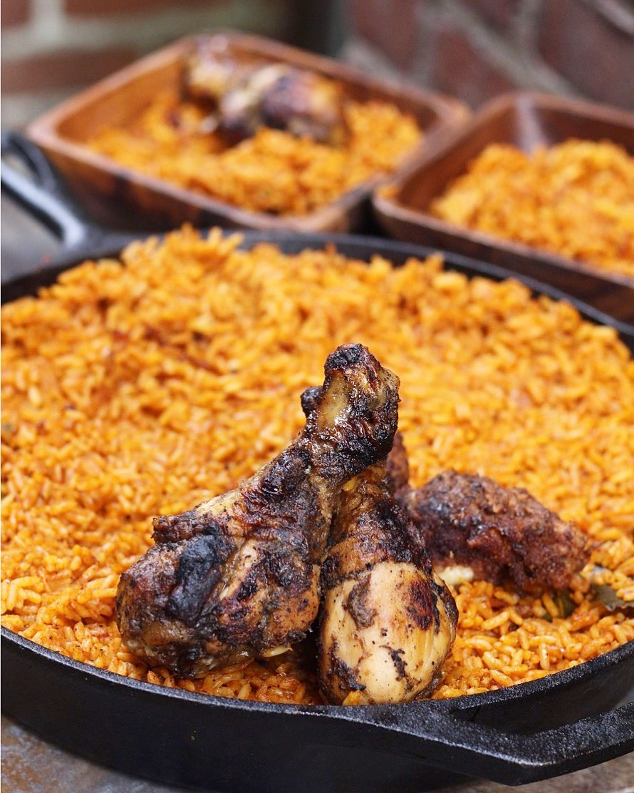

Jollof Rice Recipe

Here's what our finished dish should look like
Today, we'll be going over how to cook this delicious meal, the infamous
Nigerian Jollof rice. Here are all the ingredients you'll need:
Ingredients
- 5 medium sized Roma tomatoes, roughly chopped
- 1 red bell pepper, roughly chopped
- 1 medium sized onion, roughly chopped, set aside
-
2 scotch bonnet peppers (habanero peppers as they are sometimes called)
- 1/4 cup of groundnut oil
- 3 tbsp tomato paste
- 2 cups of parboiled rice
- 2 1/2 cups of chicken stock
- 1 tsp salt to taste
- 1/2 tsp curry powder
- 1/2 tsp thyme
- 1 tsp All purpose seasoning
- 1 Knorr stock cube
- 3 bay leaves
- Water, as needed